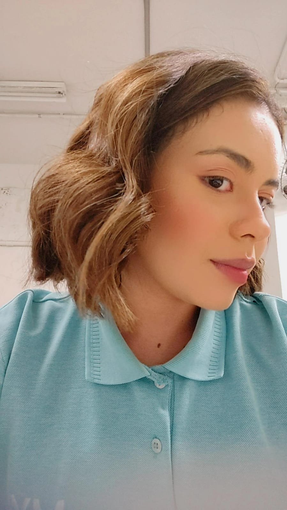
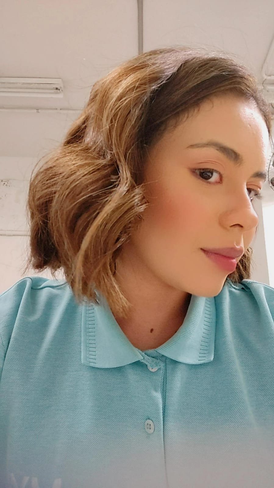

Nossos Momentos Especiais


 



Nome : Júlia Rodrigues Pereira
Nascida em 04/10/1999.
É do signo de Libra
Característica do Signino de Libra :
Os librianos são conhecidos por sua gentileza, diplomacia e busca por harmonia.
Sendo regidos por Vênus, o planeta do amor, eles são naturalmente amáveis, prestativos e carinhosos.
Júlia é uma pessoa muito especial para mim. Me ajuda em tudo, me motiva a ser alguém melhor todos os dias, cuida da "nossa" casa, e além do mais, sempre está disposta a me acalmar em relação à ansiedade. Também é muito prestativa e sempre se dispõe praticamente a tudo ao meu lado. Eu não poderia encontrar alguém melhor, tanto para me fazer focar na FACULDADE quanto para ser alguém digno para ela.

Clique para jogar online
Bomberman é um clássico jogo de estratégia onde o objetivo é destruir os inimigos e abrir caminho através de labirintos. Julia adora a emoção e os desafios que o Bomberman oferece!